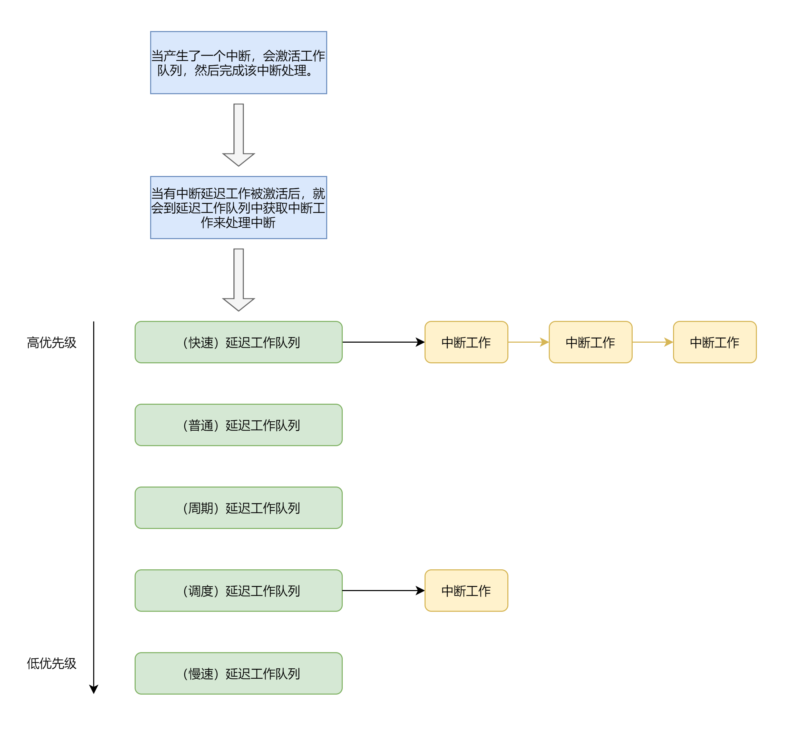

中断延迟队列
一、描述
中断延迟队列是一种延迟处理中断的机制，类似于 linux 中断机制中的中断下半部分，用来进行具体的中断处理。
中断的要求是快速地响应中断，并且是关闭了全局中断的，然后回到之前的工作。而延迟队列就是来完成这个工作的，产生了中断后，只进行最少的工作，
然后激活中断队列工作，然后就返回，完成了本次中断。等到没有中断的时候，再去从延迟队列中获取一个工作来处理其对应的中断下半部分处理工作。
二、原理
中断延迟队列在某个驱动或者内核组件中会进行初始化。当产生中断的时候，在中断处理函数中，只对中断产生时的数据进行保存，不对中断产生时的数据进行处理， 而是处理中断延迟工作，然后就直接返回。等到响应了该中断之后，再去调用延迟队列中的工作。
由于中断是具有一定优先级的，有的中断需要先处理，而有的中断则可以后处理，因此就有了多个中断队列，每个队列的优先级是不同的。至于需要加入哪种队列， 是在该延迟中断工作初始化的时候设定的。
工作队列的优先级如下，其中 NX_IRQ_FAST_QUEUE 优先级最高， NX_IRQ_SLOW_QUEUE 优先级最低。
enum NX_IRQ_DelayQueue
{
NX_IRQ_FAST_QUEUE = 0,
NX_IRQ_NORMAL_QUEUE,
NX_IRQ_PERIOD_QUEUE,
NX_IRQ_SCHED_QUEUE,
NX_IRQ_SLOW_QUEUE,
NX_IRQ_QUEUE_NR,
};
内核的定时器属于 NX_IRQ_FAST_QUEUE ，这样才能保证时间的精度。
而内核的任务调度属于 NX_IRQ_SCHED_QUEUE ，及时调度的精度低一点也没有太大影响。
三、框架图

四、接口
创建一个延迟的中断工作，需要传入中断工作处理函数入口，以及函数执行时的参数，就可以创建一个延迟的工作对象。
NX_IRQ_DelayWork *NX_IRQ_DelayWorkCreate(NX_IRQ_WorkHandler handler, void *arg, NX_U32 flags);
如果是一个静态对象，不需要创建，那么可以直接调用初始化，并传入该对象的地址即可，参数同上。
NX_Error NX_IRQ_DelayWorkInit(NX_IRQ_DelayWork *work, NX_IRQ_WorkHandler handler, void *arg, NX_U32 flags);
有创建工作，那么就有销毁工作，只需要传入工作对象的地址即可。
NX_Error NX_IRQ_DelayWorkDestroy(NX_IRQ_DelayWork *work);
创建了一个中断工作对象，就需要将其加入到某个延迟队列中，只需要传入队列和工作对象的地址即可。
NX_Error NX_IRQ_DelayQueueEnter(NX_IRQ_DelayQueue queue, NX_IRQ_DelayWork *work);
和加入延迟队列相反，有离开延迟队列，那么和加入的参数一样，只是意思相反而已。
NX_Error NX_IRQ_DelayQueueLeave(NX_IRQ_DelayQueue queue, NX_IRQ_DelayWork *work);
最后，当有中断产生的时候，就可以去激活中断工作，那么则需要调用 NX_IRQ_DelayWorkHandle 来处理工作
对象即可，传入工作对象的地址即可。
NX_Error NX_IRQ_DelayWorkHandle(NX_IRQ_DelayWork *work);